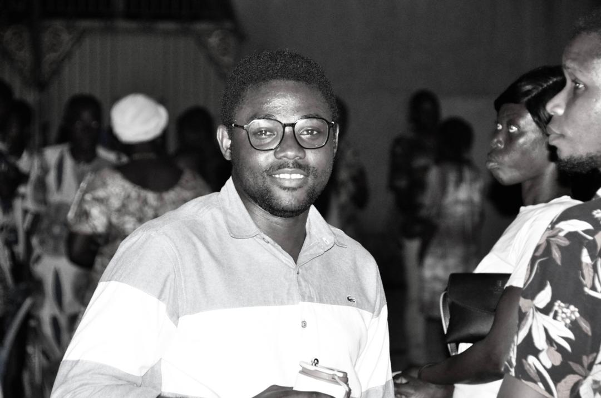

À cœur ouvert
« J’ai rendu mon mandat, oui, mais pas ma Foi. »
Cette phrase m’est venue comme un souffle le jeudi précédant le 08 mars, en sortant du Saint Sacrement. Merci pour vos mots et votre reconnaissance, même si je sais que je n’ai pas fait « beaucoup de choses ».
Avant de continuer, je me suis dit : pourquoi ne pas faire un petit CV pour le CCACJ :
- 2020-2023 : Secrétaire adjoint – Hanoukopé
- 2023-2026 : Président décanal – Doyenné Lomé Centre
« Être responsable est une charge, et non un honneur ou une gloire. »
Mais en vérité, servir la jeunesse de notre doyenné n’a jamais été pour moi une question de titre ou de prestige. C’était avant tout un appel au service. Pour moi, ma vraie gloire, c’est mon baptême, un don et une grâce.
Ce qui m’a motivé à accepter ce poste
Quand j’ai accepté cette responsabilité, je savais que ce ne serait pas facile. Mais ce qui m’a motivé, c’est l’amour de l’Église et la conviction que la jeunesse est une force vivante.
Je voulais contribuer à éveiller les consciences, rassembler les jeunes et montrer que, lorsqu’on travaille avec foi et sincérité, beaucoup de choses peuvent changer.
Pour moi, occuper ce poste signifiait servir et non se servir. Cela demandait des sacrifices, de la patience et parfois de supporter des incompréhensions.
Ce qu’est réellement le CCACJ
Le CCACJ n’est pas un simple sigle ni un bureau pour porter des titres. C’est un cadre de mission et d’engagement pour la jeunesse chrétienne.
- mettre ses talents au service de l’Église
- apprendre à travailler ensemble
- développer l’esprit de responsabilité
- grandir dans la foi
- oser et innover
Ce que le CCACJ m’a apporté
Si je devais résumer mon passage au CCACJ, je dirais simplement que cela a été une grâce.
Une grâce de servir, mais surtout une grâce de grandir.
Au fil du temps, j’ai appris à écrire, à m’exprimer, à organiser, à diriger… mais surtout à écouter, à comprendre et à porter les autres.
Le CCACJ m’a challengé, m’a parfois bousculé, mais il m’a surtout révélé à moi-même.
Il m’a appris que je pouvais aller au-delà de mes peurs, au-delà de mes doutes.
Aujourd’hui, je repars différent: plus fort, plus confiant, mais surtout plus conscient de ma mission.
Et pour cela, je rends grâce.
Mon appel aux jeunes
Je lance un appel sincère à tous les jeunes : intéressez-vous au CCACJ ! L’Église a besoin de jeunes engagés, courageux et responsables.
Ne venez pas parce que quelqu’un vous l’a demandé. Venez parce que vous avez compris que servir est une grâce.
Si chacun apporte sa pierre, nous construirons une jeunesse forte et engagée.
Que Dieu bénisse et guide toujours la jeunesse de notre doyenné.
— Olivier DAVI